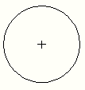

|
CenterType Property |
Specifies the type of center mark for radial and diameter dimensions.
Signature
object.CenterType
object
DimDiametric, DimRadial, DimRadialLarge
The objects this property applies to.
CenterType
acDimCenterType enum; read-write
acCenterMark
acCenterLine
acCenterNone
System variables
This property overrides the value of the DIMCEN system variable for the given dimension.
Remarks
 |
|
acCenterMark |
acCenterLine |
The center mark is visible only if you place the dimension line outside the circle or arc.
| Comments? |